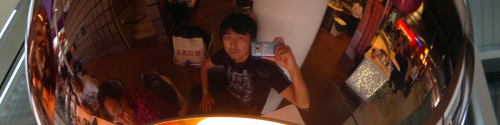

Hi, my name is Hironori Sakai. I am a machine learning engineer living in Munich, Germany.
Hi, my name is Hironori Sakai. I am a machine learning engineer living in Munich, Germany.
I have a passion for advanced analysis and DataOps. Applying advanced analysis methods, we can gain deep insights in a data. Applying DataOps methods, we can convert the gained insights into business values in a scalable fashion. I look at these two fields as a connected large field and propose an end-to-end solution for a data product.
My former profession was a researcher. After I received my PhD in Mathematics in 2009, I researched mathematics as a researcher in Taiwan (NCKU) and Germany (MPIM and Uni Muenster). After that I chose a career in data science, because I can apply my expertise, Mathematics, to a real problem in data science and I like coding.
I am currently working as a Data Engineer/Machine Learning Engineer at gutefrage.net GmbH.
Because I have experience in front-end (analysis, modeling, reporting) and back-end (data engineering, software development) in data science, I describe myself as a full stack data scientist.
I do descriptive analysis, which is the most important type of analysis. But beyond that I tackle a complicated problem which we need statistical method, machine learning or deep learning. My main programming language is Python, but I have a hands-on experience in R, as well. I use scikit-learn and pandas for my daily business. I also create a model with TensorFlow especially in an NLP project. My favorite visualization library is Altair.
An RDBMS is a comfortable data storage for me, but Spark cluster is one of my favorite environments, because it allows me to do a complicated analysis of big data. For data processing I use PySpark as well as Spark with Scala.
DataOps is DevOps for data science, namely a set of practices that combines data science and IT operations. DataOps is a key concept for an effective and efficient data science project. Git, Docker and CI/CD pipeline (Jenkins, TravisCI) are of course in my DataOps toolbox. I also have a hands-on experience in AWS. My favorite AWS tools are Lambda, S3, ECS/ECR and CodeBuild.